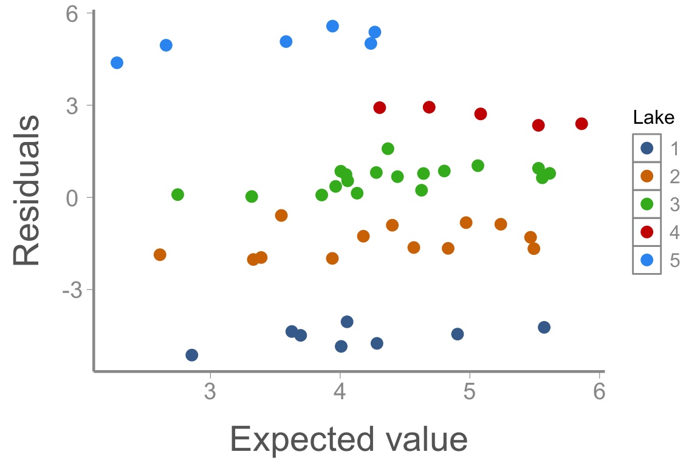
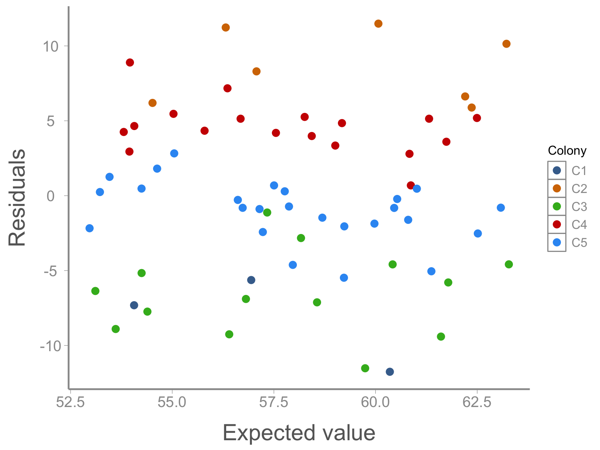
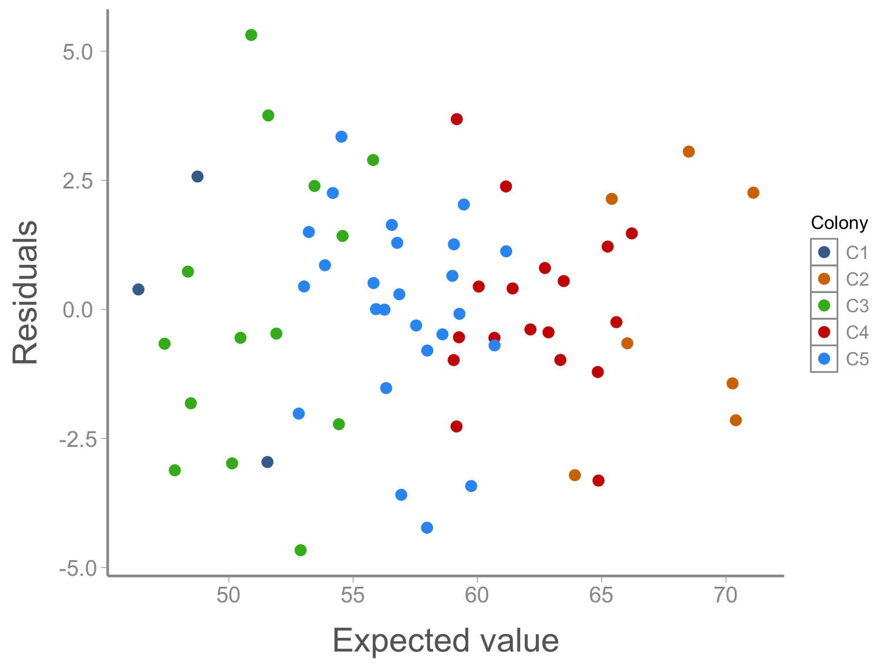
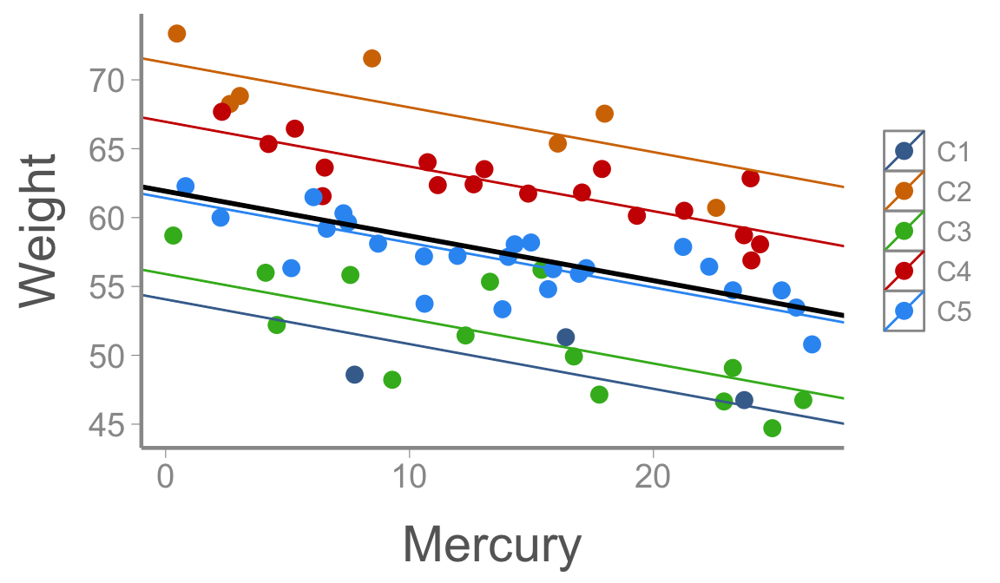
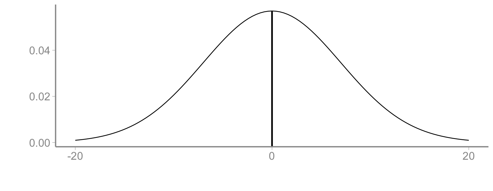
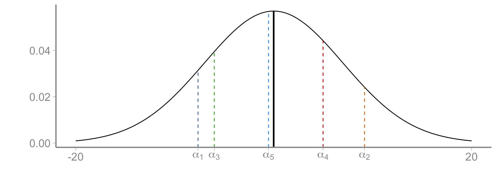
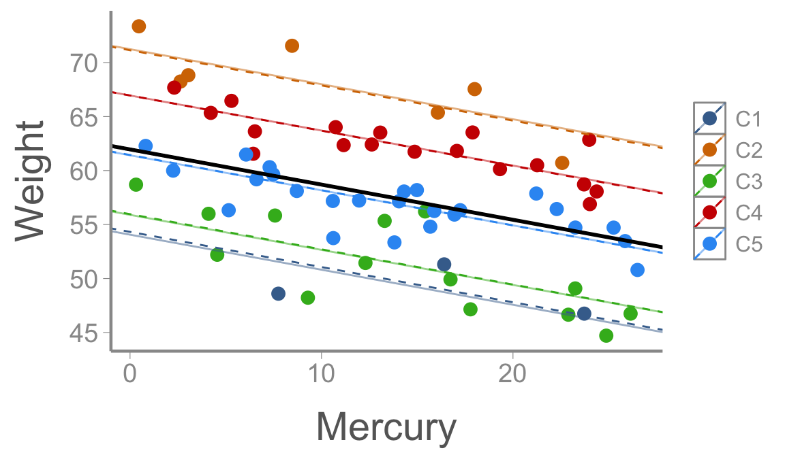
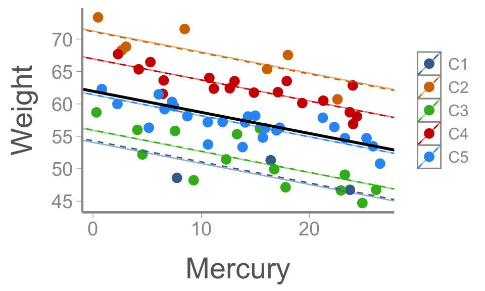
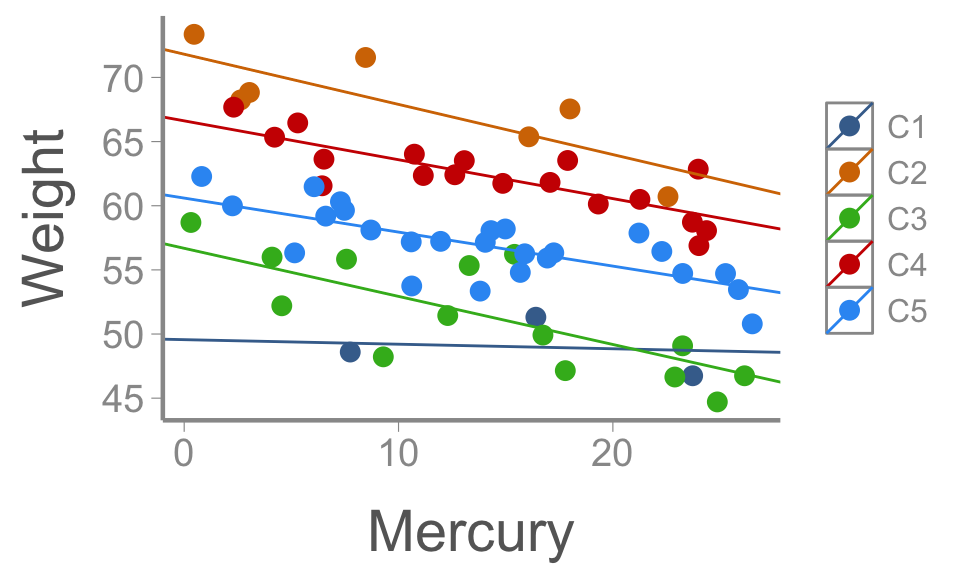

<!DOCTYPE html>
<html lang="en"><head>
<script src="../../site_libs/clipboard/clipboard.min.js"></script>
<script src="../../site_libs/quarto-html/tabby.min.js"></script>
<script src="../../site_libs/quarto-html/popper.min.js"></script>
<script src="../../site_libs/quarto-html/tippy.umd.min.js"></script>
<link href="../../site_libs/quarto-html/tippy.css" rel="stylesheet">
<link href="../../site_libs/quarto-html/light-border.css" rel="stylesheet">
<link href="../../site_libs/quarto-html/quarto-syntax-highlighting-234273d1456647dabc34a594ac50e507.css" rel="stylesheet" id="quarto-text-highlighting-styles"><meta charset="utf-8">
  <meta name="generator" content="quarto-1.7.32">

  <title>FANR6750 – randeff</title>
  <meta name="apple-mobile-web-app-capable" content="yes">
  <meta name="apple-mobile-web-app-status-bar-style" content="black-translucent">
  <meta name="viewport" content="width=device-width, initial-scale=1.0, maximum-scale=1.0, user-scalable=no, minimal-ui">
  <link rel="stylesheet" href="../../site_libs/revealjs/dist/reset.css">
  <link rel="stylesheet" href="../../site_libs/revealjs/dist/reveal.css">
  <style>
    code{white-space: pre-wrap;}
    span.smallcaps{font-variant: small-caps;}
    div.columns{display: flex; gap: min(4vw, 1.5em);}
    div.column{flex: auto; overflow-x: auto;}
    div.hanging-indent{margin-left: 1.5em; text-indent: -1.5em;}
    ul.task-list{list-style: none;}
    ul.task-list li input[type="checkbox"] {
      width: 0.8em;
      margin: 0 0.8em 0.2em -1em; /* quarto-specific, see https://github.com/quarto-dev/quarto-cli/issues/4556 */ 
      vertical-align: middle;
    }
    /* CSS for syntax highlighting */
    html { -webkit-text-size-adjust: 100%; }
    pre > code.sourceCode { white-space: pre; position: relative; }
    pre > code.sourceCode > span { display: inline-block; line-height: 1.25; }
    pre > code.sourceCode > span:empty { height: 1.2em; }
    .sourceCode { overflow: visible; }
    code.sourceCode > span { color: inherit; text-decoration: inherit; }
    div.sourceCode { margin: 1em 0; }
    pre.sourceCode { margin: 0; }
    @media screen {
    div.sourceCode { overflow: auto; }
    }
    @media print {
    pre > code.sourceCode { white-space: pre-wrap; }
    pre > code.sourceCode > span { text-indent: -5em; padding-left: 5em; }
    }
    pre.numberSource code
      { counter-reset: source-line 0; }
    pre.numberSource code > span
      { position: relative; left: -4em; counter-increment: source-line; }
    pre.numberSource code > span > a:first-child::before
      { content: counter(source-line);
        position: relative; left: -1em; text-align: right; vertical-align: baseline;
        border: none; display: inline-block;
        -webkit-touch-callout: none; -webkit-user-select: none;
        -khtml-user-select: none; -moz-user-select: none;
        -ms-user-select: none; user-select: none;
        padding: 0 4px; width: 4em;
      }
    pre.numberSource { margin-left: 3em;  padding-left: 4px; }
    div.sourceCode
      { color: #24292e;  }
    @media screen {
    pre > code.sourceCode > span > a:first-child::before { text-decoration: underline; }
    }
    code span { color: #24292e; } /* Normal */
    code span.al { color: #ff5555; font-weight: bold; } /* Alert */
    code span.an { color: #6a737d; } /* Annotation */
    code span.at { color: #d73a49; } /* Attribute */
    code span.bn { color: #005cc5; } /* BaseN */
    code span.bu { color: #d73a49; } /* BuiltIn */
    code span.cf { color: #d73a49; } /* ControlFlow */
    code span.ch { color: #032f62; } /* Char */
    code span.cn { color: #005cc5; } /* Constant */
    code span.co { color: #6a737d; } /* Comment */
    code span.cv { color: #6a737d; } /* CommentVar */
    code span.do { color: #6a737d; } /* Documentation */
    code span.dt { color: #d73a49; } /* DataType */
    code span.dv { color: #005cc5; } /* DecVal */
    code span.er { color: #ff5555; text-decoration: underline; } /* Error */
    code span.ex { color: #d73a49; font-weight: bold; } /* Extension */
    code span.fl { color: #005cc5; } /* Float */
    code span.fu { color: #6f42c1; } /* Function */
    code span.im { color: #032f62; } /* Import */
    code span.in { color: #6a737d; } /* Information */
    code span.kw { color: #d73a49; } /* Keyword */
    code span.op { color: #24292e; } /* Operator */
    code span.ot { color: #6f42c1; } /* Other */
    code span.pp { color: #d73a49; } /* Preprocessor */
    code span.re { color: #6a737d; } /* RegionMarker */
    code span.sc { color: #005cc5; } /* SpecialChar */
    code span.ss { color: #032f62; } /* SpecialString */
    code span.st { color: #032f62; } /* String */
    code span.va { color: #e36209; } /* Variable */
    code span.vs { color: #032f62; } /* VerbatimString */
    code span.wa { color: #ff5555; } /* Warning */
  </style>
  <link rel="stylesheet" href="../../site_libs/revealjs/dist/theme/quarto-de2f321f334c519abfca5296ca2f67de.css">
  <link href="../../site_libs/revealjs/plugin/quarto-line-highlight/line-highlight.css" rel="stylesheet">
  <link href="../../site_libs/revealjs/plugin/reveal-menu/menu.css" rel="stylesheet">
  <link href="../../site_libs/revealjs/plugin/reveal-menu/quarto-menu.css" rel="stylesheet">
  <link href="../../site_libs/revealjs/plugin/quarto-support/footer.css" rel="stylesheet">
  <style type="text/css">
    .reveal div.sourceCode {
      margin: 0;
      overflow: auto;
    }
    .reveal div.hanging-indent {
      margin-left: 1em;
      text-indent: -1em;
    }
    .reveal .slide:not(.center) {
      height: 100%;
    }
    .reveal .slide.scrollable {
      overflow-y: auto;
    }
    .reveal .footnotes {
      height: 100%;
      overflow-y: auto;
    }
    .reveal .slide .absolute {
      position: absolute;
      display: block;
    }
    .reveal .footnotes ol {
      counter-reset: ol;
      list-style-type: none; 
      margin-left: 0;
    }
    .reveal .footnotes ol li:before {
      counter-increment: ol;
      content: counter(ol) ". "; 
    }
    .reveal .footnotes ol li > p:first-child {
      display: inline-block;
    }
    .reveal .slide ul,
    .reveal .slide ol {
      margin-bottom: 0.5em;
    }
    .reveal .slide ul li,
    .reveal .slide ol li {
      margin-top: 0.4em;
      margin-bottom: 0.2em;
    }
    .reveal .slide ul[role="tablist"] li {
      margin-bottom: 0;
    }
    .reveal .slide ul li > *:first-child,
    .reveal .slide ol li > *:first-child {
      margin-block-start: 0;
    }
    .reveal .slide ul li > *:last-child,
    .reveal .slide ol li > *:last-child {
      margin-block-end: 0;
    }
    .reveal .slide .columns:nth-child(3) {
      margin-block-start: 0.8em;
    }
    .reveal blockquote {
      box-shadow: none;
    }
    .reveal .tippy-content>* {
      margin-top: 0.2em;
      margin-bottom: 0.7em;
    }
    .reveal .tippy-content>*:last-child {
      margin-bottom: 0.2em;
    }
    .reveal .slide > img.stretch.quarto-figure-center,
    .reveal .slide > img.r-stretch.quarto-figure-center {
      display: block;
      margin-left: auto;
      margin-right: auto; 
    }
    .reveal .slide > img.stretch.quarto-figure-left,
    .reveal .slide > img.r-stretch.quarto-figure-left  {
      display: block;
      margin-left: 0;
      margin-right: auto; 
    }
    .reveal .slide > img.stretch.quarto-figure-right,
    .reveal .slide > img.r-stretch.quarto-figure-right  {
      display: block;
      margin-left: auto;
      margin-right: 0; 
    }
  </style>
</head>
<body class="quarto-light">
  <div class="reveal">
    <div class="slides">


<section id="lecture-16-random-effects" class="slide level2 theme-title center">
<h2>LECTURE 16: random effects</h2>
<div class="footer">
<p>FANR 6750<br>
Fall 2026</p>
</div>
</section>
<section id="outline" class="slide level2 theme-inverse smaller">
<h2>Outline</h2>
<h4 id="independence-assumption">1) Independence assumption</h4>
<p><br></p>
<div class="fragment">
<h4 id="random-effects-vs.-fixed-effects">2) Random effects vs.&nbsp;fixed effects</h4>
<p><br></p>
</div>
<div class="fragment">
<h4 id="random-effects-in-linear-models">3) Random effects in linear models</h4>
<p><br></p>
</div>
</section>
<section id="independence-assumption-1" class="slide level2 smaller">
<h2>independence assumption</h2>
<p>As we have seen several times, linear models assume that residuals are independent</p>
<div class="fragment">
<p>Non-independence often stems from unmodeled “group” structure in the data</p>
<div class="cell" data-layout-align="center">
<div class="cell-output-display">
<div class="quarto-figure quarto-figure-center">
<figure>
<p></p>
</figure>
</div>
</div>
</div>
</div>
</section>
<section id="example" class="slide level2 smaller">
<h2>Example</h2>
<p>We are interested in how blood mercury levels influence the weight of Wood Stork chicks. Wood Storks nest in large colonies, so we randomly select 5 colonies for sampling. Within each colony, we randomly select 20 chicks from different nests and then measure their mass at hatching.</p>
<div class="columns">
<div class="column" style="width:50%;">
<div class="cell" data-layout-align="center">
<div class="cell-output-display">
<div class="quarto-figure quarto-figure-center">
<figure>
<p></p>
</figure>
</div>
</div>
</div>
</div><div class="column" style="width:50%;">
<div class="cell" data-layout-align="center">
<div class="sourceCode cell-code" id="cb1"><pre class="sourceCode numberSource r number-lines code-with-copy"><code class="sourceCode r"><span id="cb1-1"><a></a><span class="fu">data</span>(<span class="st">"storkdata"</span>)</span>
<span id="cb1-2"><a></a><span class="fu">head</span>(storkdata)</span></code><button title="Copy to Clipboard" class="code-copy-button"><i class="bi"></i></button></pre></div>
<div class="cell-output cell-output-stdout">
<pre><code>  Colony Mercury Weight
1     C1  7.7476  48.60
2     C1 23.7235  46.75
3     C1 16.4074  51.31
4     C2  2.6362  68.25
5     C2  0.4626  73.36
6     C2 16.0777  65.37</code></pre>
</div>
</div>
</div></div>
</section>
<section id="example-1" class="slide level2 smaller">
<h2>Example</h2>
<div class="columns">
<div class="column" style="width:50%;">
<div class="cell" data-layout-align="center">
<div class="cell-output-display">
<div class="quarto-figure quarto-figure-center">
<figure>
<p></p>
</figure>
</div>
</div>
</div>
</div><div class="column" style="width:50%;">
<ul>
<li class="fragment"><p>What is the experimental unit of this study?</p></li>
<li class="fragment"><p>What is the observational unit?</p></li>
<li class="fragment"><p>Where do we expect non-independence to arise?</p></li>
</ul>
</div></div>
</section>
<section id="example-2" class="slide level2 smaller">
<h2>Example</h2>
<div class="cell" data-layout-align="center">
<div class="sourceCode cell-code" id="cb3"><pre class="sourceCode numberSource r number-lines code-with-copy"><code class="sourceCode r"><span id="cb3-1"><a></a>fm1 <span class="ot">&lt;-</span> <span class="fu">lm</span>(Weight <span class="sc">~</span> Mercury, <span class="at">data =</span> storkdata)</span></code><button title="Copy to Clipboard" class="code-copy-button"><i class="bi"></i></button></pre></div>
</div>

</section>
<section id="example-3" class="slide level2 smaller">
<h2>Example</h2>
<div class="cell" data-layout-align="center">
<div class="sourceCode cell-code" id="cb4"><pre class="sourceCode numberSource r number-lines code-with-copy"><code class="sourceCode r"><span id="cb4-1"><a></a>fm2 <span class="ot">&lt;-</span> <span class="fu">lm</span>(Weight <span class="sc">~</span> Mercury <span class="sc">+</span> Colony, </span>
<span id="cb4-2"><a></a>          <span class="at">data =</span> storkdata)</span></code><button title="Copy to Clipboard" class="code-copy-button"><i class="bi"></i></button></pre></div>
</div>

</section>
<section id="example-4" class="slide level2 smaller">
<h2>Example</h2>
<p><span class="highlight">Question</span>: Where does sampling error come from in this model?</p>
<div class="fragment">
<p><span class="highlight">Answer</span>: At least two places:</p>
<ul>
<li><p>random selection of chicks within colonies</p></li>
<li><p>random selection of colonies</p></li>
</ul>
</div>
<div class="fragment">
<p>Because we are sampling at multiple scales, there is uncertainty associated with each level</p>
<ul>
<li>If we re-ran the study, we would get slightly different estimates of each parameter because the exact colonies/chicks would be different</li>
</ul>
</div>
<div class="fragment">
<p>For both statistical and inferential reasons, our model should ideally account for sampling processes (and the associated non-independence) at each level</p>
</div>
</section>
<section id="random-effects" class="slide level2 theme-inverse center">
<h2>Random effects</h2>
</section>
<section id="what-are-random-effects" class="slide level2 smaller">
<h2>What are random effects<a href="#/footnotes" class="footnote-ref" id="fnref1" role="doc-noteref" data-footnote-href="#/fn1" onclick=""><sup>1</sup></a></h2>
<ul>
<li class="fragment"><p>“Fixed effects are constant across observational units, random effects vary across units”</p></li>
<li class="fragment"><p>“Fixed effects are used when you are interested in the specific factor levels, random effects are used when you are interested in the underlying population”</p></li>
<li class="fragment"><p>“When factors levels are exhaustive, they are fixed. When they are a sample of the possible levels, they are random”</p></li>
<li class="fragment"><p>“Random effects are the realized values of a random variable”</p></li>
<li class="fragment"><p>“Fixed effects are estimated by maximum likelihood, random effects are estimated with shrinkage”</p></li>
</ul>
<aside></aside></section>
<section id="what-are-random-effects-1" class="slide level2 smaller">
<h2>What are random effects</h2>
<p>Previously, when we included factors in the model, we treated them as <em>fixed effects</em>. We chose each level for a reason and if we repeated the experiment, we would use the same levels, either because those are the specific levels we are interested in or because those are all of the possible levels</p>
<ul>
<li><p>Low, medium, high</p></li>
<li><p>Brand A, Brand B, Brand C</p></li>
<li><p>Species 1, species 2, species 3</p></li>
</ul>
<div class="fragment">
<p>A random effects model is appropriate when the treatment levels in the experiment can be considered a sample from a larger population of interest</p>
<ul>
<li>In the previous example, we are interested in all colonies, not just the ones included in the study</li>
</ul>
</div>
</section>
<section id="fixed-vs.-random-effects" class="slide level2 smaller">
<h2>Fixed vs.&nbsp;random effects</h2>
<p>Fixed-effect formulation:</p>
<p><span class="math display">\[\large y_{ij} = \mu + \alpha_j + \beta x_i + \epsilon_{ij}\]</span> <span class="math display">\[\large \epsilon_{ij} \sim normal(0, \sigma^2)\]</span></p>
<ul>
<li><span class="math inline">\(y_{ij}\)</span> = weight of chick <span class="math inline">\(i\)</span> in colony <span class="math inline">\(j\)</span>; <span class="math inline">\(x_i\)</span> = mercury level of chick <span class="math inline">\(i\)</span></li>
</ul>

</section>
<section id="fixed-vs.-random-effects-1" class="slide level2 smaller">
<h2>Fixed vs.&nbsp;random effects</h2>
<p>Random-effect formulation:</p>
<p><span class="math display">\[\large y_{ij} = \mu + \alpha_j + \beta x_i + \epsilon_{ij}\]</span> <span class="math display">\[\large \alpha_j \sim normal(0, \sigma^2_C)\]</span></p>
<p><span class="math display">\[\large \epsilon_{ij} \sim normal(0, \sigma^2)\]</span></p>
<ul>
<li><span class="math inline">\(y_{ij}\)</span> = weight of chick <span class="math inline">\(i\)</span> in colony <span class="math inline">\(j\)</span>; <span class="math inline">\(x_i\)</span> = mercury level of chick <span class="math inline">\(i\)</span></li>
</ul>

</section>
<section id="fixed-vs.-random-effects-2" class="slide level2 smaller">
<h2>Fixed vs.&nbsp;random effects</h2>
<p>Random-effect formulation:</p>
<p><span class="math display">\[\large y_{ij} = \mu + \alpha_j + \beta x_i + \epsilon_{ij}\]</span> <span class="math display">\[\large \alpha_j \sim normal(0, \sigma^2_C)\]</span></p>
<p><span class="math display">\[\large \epsilon_{ij} \sim normal(0, \sigma^2)\]</span></p>
<ul>
<li><span class="math inline">\(y_{ij}\)</span> = weight of chick <span class="math inline">\(i\)</span> in colony <span class="math inline">\(j\)</span>; <span class="math inline">\(x_i\)</span> = mercury level of chick <span class="math inline">\(i\)</span></li>
</ul>

</section>
<section id="fixed-vs.-random-effects-3" class="slide level2 smaller">
<h2>Fixed vs.&nbsp;random effects</h2>
<p>Random-effect formulation:</p>
<p><span class="math display">\[\large y_{ij} = \mu + \alpha_{[j]} + \beta x_i + \epsilon_{ij}\]</span> <span class="math display">\[\large \alpha_{[j]} \sim normal(0, \sigma^2_C)\]</span></p>
<p><span class="math display">\[\large \epsilon_{ij} \sim normal(0, \sigma^2)\]</span></p>
<ul>
<li><span class="math inline">\(y_{ij}\)</span> = weight of chick <span class="math inline">\(i\)</span> in colony <span class="math inline">\(j\)</span>; <span class="math inline">\(x_i\)</span> = mercury level of chick <span class="math inline">\(i\)</span></li>
</ul>

</section>
<section id="hypotheses" class="slide level2 smaller">
<h2>Hypotheses</h2>
<p>In a random-effects model, our interest is in assessing how much variation there is among all the effects in the population, not just the ones in our sample</p>
<p>As a result, our hypotheses must be written differently:</p>
<p>Fixed-effects model</p>
<p><span class="math display">\[\large H_0 : \alpha_1 = \alpha_2 = ... = \alpha_a = 0\]</span></p>
<p><span class="math display">\[\large H_a : At\;least\;one\;inequality\]</span></p>
<p>Random-effects model</p>
<p><span class="math display">\[\large H_0 : \sigma^2_C = 0\]</span></p>
<p><span class="math display">\[\large H_a : \sigma^2_C &gt; 0\]</span></p>
</section>
<section id="random-intercept-models-in-r" class="slide level2 smaller">
<h2>Random-intercept models in <code>r</code></h2>
<div class="columns">
<div class="column">
<div class="cell" data-layout-align="center">
<div class="sourceCode cell-code" id="cb5"><pre class="sourceCode numberSource r number-lines code-with-copy"><code class="sourceCode r"><span id="cb5-1"><a></a><span class="fu">library</span>(lme4)</span>
<span id="cb5-2"><a></a><span class="fu">data</span>(<span class="st">"storkdata"</span>)</span>
<span id="cb5-3"><a></a>m1 <span class="ot">&lt;-</span> <span class="fu">lmer</span>(Weight <span class="sc">~</span> Mercury <span class="sc">+</span> (<span class="dv">1</span><span class="sc">|</span>Colony), <span class="at">data =</span> storkdata)</span>
<span id="cb5-4"><a></a><span class="fu">summary</span>(m1)</span></code><button title="Copy to Clipboard" class="code-copy-button"><i class="bi"></i></button></pre></div>
<div class="cell-output cell-output-stdout">
<pre><code>Linear mixed model fit by REML ['lmerMod']
Formula: Weight ~ Mercury + (1 | Colony)
   Data: storkdata

REML criterion at convergence: 316.4

Scaled residuals: 
    Min      1Q  Median      3Q     Max 
-2.1711 -0.4972 -0.0025  0.6121  2.4314 

Random effects:
 Groups   Name        Variance Std.Dev.
 Colony   (Intercept) 51.58    7.18    
 Residual              4.71    2.17    
Number of obs: 67, groups:  Colony, 5

Fixed effects:
            Estimate Std. Error t value
(Intercept)  61.9644     3.2669   18.97
Mercury      -0.3261     0.0355   -9.19

Correlation of Fixed Effects:
        (Intr)
Mercury -0.149</code></pre>
</div>
</div>
</div><div class="column">
<div class="cell" data-layout-align="center">
<div class="sourceCode cell-code" id="cb7"><pre class="sourceCode numberSource r number-lines code-with-copy"><code class="sourceCode r"><span id="cb7-1"><a></a><span class="fu">ranef</span>(m1)</span></code><button title="Copy to Clipboard" class="code-copy-button"><i class="bi"></i></button></pre></div>
<div class="cell-output cell-output-stdout">
<pre><code>$Colony
   (Intercept)
C1     -7.6440
C2      9.1814
C3     -6.0028
C4      4.9890
C5     -0.5236

with conditional variances for "Colony" </code></pre>
</div>
</div>
<div class="cell" data-layout-align="center">
<div class="cell-output-display">
<div class="quarto-figure quarto-figure-center">
<figure>
<p></p>
</figure>
</div>
</div>
</div>
</div></div>
</section>
<section id="random-slope-models-in-r" class="slide level2 smaller">
<h2>Random-slope models in <code>r</code></h2>
<p>It’s also possible to treat the slopes as random effects</p>
<div class="columns">
<div class="column">
<div class="cell" data-layout-align="center">
<div class="sourceCode cell-code" id="cb9"><pre class="sourceCode numberSource r number-lines code-with-copy"><code class="sourceCode r"><span id="cb9-1"><a></a>m2 <span class="ot">&lt;-</span> <span class="fu">lmer</span>(Weight <span class="sc">~</span> (Mercury<span class="sc">|</span>Colony), <span class="at">data =</span> storkdata)</span>
<span id="cb9-2"><a></a><span class="fu">summary</span>(m2)</span></code><button title="Copy to Clipboard" class="code-copy-button"><i class="bi"></i></button></pre></div>
<div class="cell-output cell-output-stdout">
<pre><code>Linear mixed model fit by REML ['lmerMod']
Formula: Weight ~ (Mercury | Colony)
   Data: storkdata

REML criterion at convergence: 324.4

Scaled residuals: 
    Min      1Q  Median      3Q     Max 
-2.3062 -0.5052 -0.0609  0.6958  2.4559 

Random effects:
 Groups   Name        Variance Std.Dev. Corr  
 Colony   (Intercept) 172.82   13.146         
          Mercury       0.10    0.316   -0.88 
 Residual               4.66    2.159         
Number of obs: 67, groups:  Colony, 5

Fixed effects:
            Estimate Std. Error t value
(Intercept)    51.00       2.95    17.3</code></pre>
</div>
</div>
</div><div class="column">
<div class="cell" data-layout-align="center">
<div class="sourceCode cell-code" id="cb11"><pre class="sourceCode numberSource r number-lines code-with-copy"><code class="sourceCode r"><span id="cb11-1"><a></a><span class="fu">ranef</span>(m2)</span></code><button title="Copy to Clipboard" class="code-copy-button"><i class="bi"></i></button></pre></div>
<div class="cell-output cell-output-stdout">
<pre><code>$Colony
   (Intercept)  Mercury
C1      -1.440 -0.03554
C2      20.816 -0.39147
C3       5.684 -0.37504
C4      15.615 -0.30312
C5       9.598 -0.26529

with conditional variances for "Colony" </code></pre>
</div>
</div>
<div class="cell" data-layout-align="center">
<div class="cell-output-display">
<div class="quarto-figure quarto-figure-center">
<figure>
<p></p>
</figure>
</div>
</div>
</div>
</div></div>
</section>
<section id="mixed-effect-models-in-r" class="slide level2 smaller">
<h2>Mixed-effect models in <code>r</code></h2>
<p>It’s also possible to combine fixed and random effects in the same model (usually referred to as “mixed effect” models or “mixed” models)</p>
<div class="cell" data-layout-align="center">
<div class="sourceCode cell-code" id="cb13"><pre class="sourceCode numberSource r number-lines code-with-copy"><code class="sourceCode r"><span id="cb13-1"><a></a><span class="fu">data</span>(<span class="st">"mothdata"</span>)</span>
<span id="cb13-2"><a></a>m3 <span class="ot">&lt;-</span> <span class="fu">lmer</span>(Larvae <span class="sc">~</span> Treatment <span class="sc">+</span> (<span class="dv">1</span><span class="sc">|</span>Region), <span class="at">data =</span> mothdata)</span>
<span id="cb13-3"><a></a><span class="fu">summary</span>(m3)</span></code><button title="Copy to Clipboard" class="code-copy-button"><i class="bi"></i></button></pre></div>
<div class="cell-output cell-output-stdout">
<pre><code>Linear mixed model fit by REML ['lmerMod']
Formula: Larvae ~ Treatment + (1 | Region)
   Data: mothdata

REML criterion at convergence: 62.3

Scaled residuals: 
   Min     1Q Median     3Q    Max 
-1.109 -0.322 -0.112  0.210  1.390 

Random effects:
 Groups   Name        Variance Std.Dev.
 Region   (Intercept) 41.5     6.44    
 Residual             19.1     4.37    
Number of obs: 12, groups:  Region, 4

Fixed effects:
                 Estimate Std. Error t value
(Intercept)         20.50       3.89    5.27
TreatmentBt         -8.75       3.09   -2.83
TreatmentDimilin    -9.50       3.09   -3.07

Correlation of Fixed Effects:
            (Intr) TrtmnB
TreatmentBt -0.397       
TretmntDmln -0.397  0.500</code></pre>
</div>
</div>
</section>
<section id="why-use-random-effects" class="slide level2 smaller">
<h2>Why use random effects?</h2>
<ul>
<li class="fragment"><p>Random effects only apply to categorical predictors, not continuous predictors</p>
<ul>
<li class="fragment">Generally need many treatment levels (5-10) to estimate variance parameter</li>
</ul></li>
<li class="fragment"><p>The choice of random vs fixed effects usually depends on the scope of inference</p>
<ul>
<li class="fragment">Are the factor levels exhaustive or are they samples of a larger population? If you repeated the experiment, could you end up with different groups?</li>
</ul></li>
<li class="fragment"><p>Random effects account for non-independence caused by group structure <em>and</em> provide insights into the larger population</p></li>
<li class="fragment"><p>When sample sizes are sufficiently large and balanced, the regression parameters will be essentially the same in fixed vs random-effect models</p>
<ul>
<li class="fragment"><p>When sample sizes are small/unbalanced, estimates for groups with less data will be “pulled” towards the mean (this is a good thing!)</p></li>
<li class="fragment"><p>The degree of change is a function of how far the parameters are from the mean and how much information is in the data</p></li>
</ul></li>
</ul>
</section>
<section id="looking-ahead" class="slide level2">
<h2>Looking ahead</h2>
<p><br></p>
<p><span class="highlight">Next time</span>: Nested designs</p>
<p><br></p>
<p><span class="highlight">Reading</span>: <a href="https://statistics4ecologists-v1.netlify.app/mixed#what-are-random-effects-mixed-effect-models-and-when-should-they-be-used">Fieberg chp. 18.4-18.6</a></p>


</section>
<section id="footnotes" class="footnotes footnotes-end-of-document smaller scrollable" role="doc-endnotes"><h2>Footnotes</h2>

<ol>
<li id="fn1"><p>Definitions from Gelman &amp; Hill (2007) pg. 245</p></li>
</ol>
</section>
    </div>
  <div class="quarto-auto-generated-content" style="display: none;">
<div class="footer footer-default">

</div>
</div></div>

  <script>window.backupDefine = window.define; window.define = undefined;</script>
  <script src="../../site_libs/revealjs/dist/reveal.js"></script>
  <!-- reveal.js plugins -->
  <script src="../../site_libs/revealjs/plugin/quarto-line-highlight/line-highlight.js"></script>
  <script src="../../site_libs/revealjs/plugin/pdf-export/pdfexport.js"></script>
  <script src="../../site_libs/revealjs/plugin/reveal-menu/menu.js"></script>
  <script src="../../site_libs/revealjs/plugin/reveal-menu/quarto-menu.js"></script>
  <script src="../../site_libs/revealjs/plugin/quarto-support/support.js"></script>
  

  <script src="../../site_libs/revealjs/plugin/notes/notes.js"></script>
  <script src="../../site_libs/revealjs/plugin/search/search.js"></script>
  <script src="../../site_libs/revealjs/plugin/zoom/zoom.js"></script>
  <script src="../../site_libs/revealjs/plugin/math/math.js"></script>
  <script>window.define = window.backupDefine; window.backupDefine = undefined;</script>

  <script>

      // Full list of configuration options available at:
      // https://revealjs.com/config/
      Reveal.initialize({
'controlsAuto': true,
'previewLinksAuto': false,
'pdfSeparateFragments': false,
'autoAnimateEasing': "ease",
'autoAnimateDuration': 1,
'autoAnimateUnmatched': true,
'jumpToSlide': true,
'menu': {"side":"left","useTextContentForMissingTitles":true,"markers":false,"loadIcons":false,"custom":[{"title":"Tools","icon":"<i class=\"fas fa-gear\"></i>","content":"<ul class=\"slide-menu-items\">\n<li class=\"slide-tool-item active\" data-item=\"0\"><a href=\"#\" onclick=\"RevealMenuToolHandlers.fullscreen(event)\"><kbd>f</kbd> Fullscreen</a></li>\n<li class=\"slide-tool-item\" data-item=\"1\"><a href=\"#\" onclick=\"RevealMenuToolHandlers.speakerMode(event)\"><kbd>s</kbd> Speaker View</a></li>\n<li class=\"slide-tool-item\" data-item=\"2\"><a href=\"#\" onclick=\"RevealMenuToolHandlers.overview(event)\"><kbd>o</kbd> Slide Overview</a></li>\n<li class=\"slide-tool-item\" data-item=\"3\"><a href=\"#\" onclick=\"RevealMenuToolHandlers.togglePdfExport(event)\"><kbd>e</kbd> PDF Export Mode</a></li>\n<li class=\"slide-tool-item\" data-item=\"4\"><a href=\"#\" onclick=\"RevealMenuToolHandlers.toggleScrollView(event)\"><kbd>r</kbd> Scroll View Mode</a></li>\n<li class=\"slide-tool-item\" data-item=\"5\"><a href=\"#\" onclick=\"RevealMenuToolHandlers.keyboardHelp(event)\"><kbd>?</kbd> Keyboard Help</a></li>\n</ul>"}],"openButton":true},
'smaller': false,
 
        // Display controls in the bottom right corner
        controls: false,

        // Help the user learn the controls by providing hints, for example by
        // bouncing the down arrow when they first encounter a vertical slide
        controlsTutorial: false,

        // Determines where controls appear, "edges" or "bottom-right"
        controlsLayout: 'edges',

        // Visibility rule for backwards navigation arrows; "faded", "hidden"
        // or "visible"
        controlsBackArrows: 'faded',

        // Display a presentation progress bar
        progress: true,

        // Display the page number of the current slide
        slideNumber: false,

        // 'all', 'print', or 'speaker'
        showSlideNumber: 'all',

        // Add the current slide number to the URL hash so that reloading the
        // page/copying the URL will return you to the same slide
        hash: true,

        // Start with 1 for the hash rather than 0
        hashOneBasedIndex: false,

        // Flags if we should monitor the hash and change slides accordingly
        respondToHashChanges: true,

        // Push each slide change to the browser history
        history: true,

        // Enable keyboard shortcuts for navigation
        keyboard: true,

        // Enable the slide overview mode
        overview: true,

        // Disables the default reveal.js slide layout (scaling and centering)
        // so that you can use custom CSS layout
        disableLayout: false,

        // Vertical centering of slides
        center: false,

        // Enables touch navigation on devices with touch input
        touch: true,

        // Loop the presentation
        loop: false,

        // Change the presentation direction to be RTL
        rtl: false,

        // see https://revealjs.com/vertical-slides/#navigation-mode
        navigationMode: 'linear',

        // Randomizes the order of slides each time the presentation loads
        shuffle: false,

        // Turns fragments on and off globally
        fragments: true,

        // Flags whether to include the current fragment in the URL,
        // so that reloading brings you to the same fragment position
        fragmentInURL: false,

        // Flags if the presentation is running in an embedded mode,
        // i.e. contained within a limited portion of the screen
        embedded: false,

        // Flags if we should show a help overlay when the questionmark
        // key is pressed
        help: true,

        // Flags if it should be possible to pause the presentation (blackout)
        pause: true,

        // Flags if speaker notes should be visible to all viewers
        showNotes: false,

        // Global override for autoplaying embedded media (null/true/false)
        autoPlayMedia: null,

        // Global override for preloading lazy-loaded iframes (null/true/false)
        preloadIframes: null,

        // Number of milliseconds between automatically proceeding to the
        // next slide, disabled when set to 0, this value can be overwritten
        // by using a data-autoslide attribute on your slides
        autoSlide: 0,

        // Stop auto-sliding after user input
        autoSlideStoppable: true,

        // Use this method for navigation when auto-sliding
        autoSlideMethod: null,

        // Specify the average time in seconds that you think you will spend
        // presenting each slide. This is used to show a pacing timer in the
        // speaker view
        defaultTiming: null,

        // Enable slide navigation via mouse wheel
        mouseWheel: false,

        // The display mode that will be used to show slides
        display: 'block',

        // Hide cursor if inactive
        hideInactiveCursor: true,

        // Time before the cursor is hidden (in ms)
        hideCursorTime: 5000,

        // Opens links in an iframe preview overlay
        previewLinks: false,

        // Transition style (none/fade/slide/convex/concave/zoom)
        transition: 'none',

        // Transition speed (default/fast/slow)
        transitionSpeed: 'default',

        // Transition style for full page slide backgrounds
        // (none/fade/slide/convex/concave/zoom)
        backgroundTransition: 'none',

        // Number of slides away from the current that are visible
        viewDistance: 3,

        // Number of slides away from the current that are visible on mobile
        // devices. It is advisable to set this to a lower number than
        // viewDistance in order to save resources.
        mobileViewDistance: 2,

        // The "normal" size of the presentation, aspect ratio will be preserved
        // when the presentation is scaled to fit different resolutions. Can be
        // specified using percentage units.
        width: 1050,

        height: 700,

        // Factor of the display size that should remain empty around the content
        margin: 0.1,

        math: {
          mathjax: 'https://cdnjs.cloudflare.com/ajax/libs/mathjax/2.7.9/MathJax.js',
          config: 'TeX-AMS_HTML-full',
          tex2jax: {
            inlineMath: [['\\(','\\)']],
            displayMath: [['\\[','\\]']],
            balanceBraces: true,
            processEscapes: false,
            processRefs: true,
            processEnvironments: true,
            preview: 'TeX',
            skipTags: ['script','noscript','style','textarea','pre','code'],
            ignoreClass: 'tex2jax_ignore',
            processClass: 'tex2jax_process'
          },
        },

        // reveal.js plugins
        plugins: [QuartoLineHighlight, PdfExport, RevealMenu, QuartoSupport,

          RevealMath,
          RevealNotes,
          RevealSearch,
          RevealZoom
        ]
      });
    </script>
    
    <script>
      // htmlwidgets need to know to resize themselves when slides are shown/hidden.
      // Fire the "slideenter" event (handled by htmlwidgets.js) when the current
      // slide changes (different for each slide format).
      (function () {
        // dispatch for htmlwidgets
        function fireSlideEnter() {
          const event = window.document.createEvent("Event");
          event.initEvent("slideenter", true, true);
          window.document.dispatchEvent(event);
        }

        function fireSlideChanged(previousSlide, currentSlide) {
          fireSlideEnter();

          // dispatch for shiny
          if (window.jQuery) {
            if (previousSlide) {
              window.jQuery(previousSlide).trigger("hidden");
            }
            if (currentSlide) {
              window.jQuery(currentSlide).trigger("shown");
            }
          }
        }

        // hookup for slidy
        if (window.w3c_slidy) {
          window.w3c_slidy.add_observer(function (slide_num) {
            // slide_num starts at position 1
            fireSlideChanged(null, w3c_slidy.slides[slide_num - 1]);
          });
        }

      })();
    </script>

    <script id="quarto-html-after-body" type="application/javascript">
      window.document.addEventListener("DOMContentLoaded", function (event) {
        const tabsets =  window.document.querySelectorAll(".panel-tabset-tabby")
        tabsets.forEach(function(tabset) {
          const tabby = new Tabby('#' + tabset.id);
        });
        const isCodeAnnotation = (el) => {
          for (const clz of el.classList) {
            if (clz.startsWith('code-annotation-')) {                     
              return true;
            }
          }
          return false;
        }
        const onCopySuccess = function(e) {
          // button target
          const button = e.trigger;
          // don't keep focus
          button.blur();
          // flash "checked"
          button.classList.add('code-copy-button-checked');
          var currentTitle = button.getAttribute("title");
          button.setAttribute("title", "Copied!");
          let tooltip;
          if (window.bootstrap) {
            button.setAttribute("data-bs-toggle", "tooltip");
            button.setAttribute("data-bs-placement", "left");
            button.setAttribute("data-bs-title", "Copied!");
            tooltip = new bootstrap.Tooltip(button, 
              { trigger: "manual", 
                customClass: "code-copy-button-tooltip",
                offset: [0, -8]});
            tooltip.show();    
          }
          setTimeout(function() {
            if (tooltip) {
              tooltip.hide();
              button.removeAttribute("data-bs-title");
              button.removeAttribute("data-bs-toggle");
              button.removeAttribute("data-bs-placement");
            }
            button.setAttribute("title", currentTitle);
            button.classList.remove('code-copy-button-checked');
          }, 1000);
          // clear code selection
          e.clearSelection();
        }
        const getTextToCopy = function(trigger) {
            const codeEl = trigger.previousElementSibling.cloneNode(true);
            for (const childEl of codeEl.children) {
              if (isCodeAnnotation(childEl)) {
                childEl.remove();
              }
            }
            return codeEl.innerText;
        }
        const clipboard = new window.ClipboardJS('.code-copy-button:not([data-in-quarto-modal])', {
          text: getTextToCopy
        });
        clipboard.on('success', onCopySuccess);
        if (window.document.getElementById('quarto-embedded-source-code-modal')) {
          const clipboardModal = new window.ClipboardJS('.code-copy-button[data-in-quarto-modal]', {
            text: getTextToCopy,
            container: window.document.getElementById('quarto-embedded-source-code-modal')
          });
          clipboardModal.on('success', onCopySuccess);
        }
          var localhostRegex = new RegExp(/^(?:http|https):\/\/localhost\:?[0-9]*\//);
          var mailtoRegex = new RegExp(/^mailto:/);
            var filterRegex = new RegExp("https:\/\/rushinglab\.github\.io\/FANR6750\/");
          var isInternal = (href) => {
              return filterRegex.test(href) || localhostRegex.test(href) || mailtoRegex.test(href);
          }
          // Inspect non-navigation links and adorn them if external
         var links = window.document.querySelectorAll('a[href]:not(.nav-link):not(.navbar-brand):not(.toc-action):not(.sidebar-link):not(.sidebar-item-toggle):not(.pagination-link):not(.no-external):not([aria-hidden]):not(.dropdown-item):not(.quarto-navigation-tool):not(.about-link)');
          for (var i=0; i<links.length; i++) {
            const link = links[i];
            if (!isInternal(link.href)) {
              // undo the damage that might have been done by quarto-nav.js in the case of
              // links that we want to consider external
              if (link.dataset.originalHref !== undefined) {
                link.href = link.dataset.originalHref;
              }
            }
          }
        function tippyHover(el, contentFn, onTriggerFn, onUntriggerFn) {
          const config = {
            allowHTML: true,
            maxWidth: 500,
            delay: 100,
            arrow: false,
            appendTo: function(el) {
                return el.closest('section.slide') || el.parentElement;
            },
            interactive: true,
            interactiveBorder: 10,
            theme: 'light-border',
            placement: 'bottom-start',
          };
          if (contentFn) {
            config.content = contentFn;
          }
          if (onTriggerFn) {
            config.onTrigger = onTriggerFn;
          }
          if (onUntriggerFn) {
            config.onUntrigger = onUntriggerFn;
          }
            config['offset'] = [0,0];
            config['maxWidth'] = 700;
          window.tippy(el, config); 
        }
        const noterefs = window.document.querySelectorAll('a[role="doc-noteref"]');
        for (var i=0; i<noterefs.length; i++) {
          const ref = noterefs[i];
          tippyHover(ref, function() {
            // use id or data attribute instead here
            let href = ref.getAttribute('data-footnote-href') || ref.getAttribute('href');
            try { href = new URL(href).hash; } catch {}
            const id = href.replace(/^#\/?/, "");
            const note = window.document.getElementById(id);
            if (note) {
              return note.innerHTML;
            } else {
              return "";
            }
          });
        }
        const findCites = (el) => {
          const parentEl = el.parentElement;
          if (parentEl) {
            const cites = parentEl.dataset.cites;
            if (cites) {
              return {
                el,
                cites: cites.split(' ')
              };
            } else {
              return findCites(el.parentElement)
            }
          } else {
            return undefined;
          }
        };
        var bibliorefs = window.document.querySelectorAll('a[role="doc-biblioref"]');
        for (var i=0; i<bibliorefs.length; i++) {
          const ref = bibliorefs[i];
          const citeInfo = findCites(ref);
          if (citeInfo) {
            tippyHover(citeInfo.el, function() {
              var popup = window.document.createElement('div');
              citeInfo.cites.forEach(function(cite) {
                var citeDiv = window.document.createElement('div');
                citeDiv.classList.add('hanging-indent');
                citeDiv.classList.add('csl-entry');
                var biblioDiv = window.document.getElementById('ref-' + cite);
                if (biblioDiv) {
                  citeDiv.innerHTML = biblioDiv.innerHTML;
                }
                popup.appendChild(citeDiv);
              });
              return popup.innerHTML;
            });
          }
        }
      });
      </script>
    

</body></html>